|
Proceso para dar de alta usuarios administradores:
Descripción de elementos:
1) Datos del usuario administrador.
Los cambios de asignación, modificación y eliminación de permisos no se harán efectivos hasta que no se pulse sobre el botón Aceptar de la ventana principal de Nuevo Usuario.
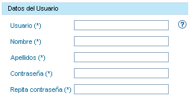
2) Gestión de permisos en entidades.Si el nombre de usuario no se encuentra libre, el botón Aceptar se deshabilitará y el usuario será advertido mediante el siguiente icono: Si el nombre de usuario se encuentra libre, el botón Aceptar se habilitará y el usuario será advertido mediante el siguiente icono:
Permisos actualmente asignado al usuario administrador.
Permisos: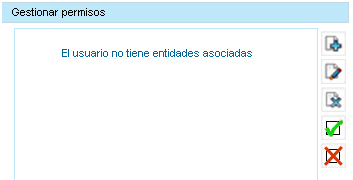 En esta ventana el usuario puede visualizar los permisos asignados actualmente al usuario que se está dando de alta. En caso de haber algún permiso ya asignado, el usuario verá un listado similar al siguiente: 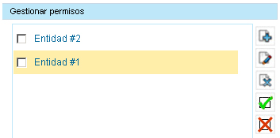 Si se desea consultar los permisos asignados a una entidad, pulse sobre el nombre de la entidad en el listado anterior: 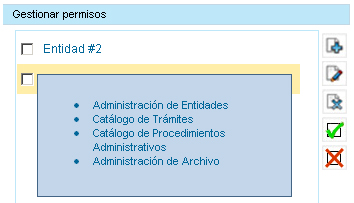 En cuanto a la gestión de permisos se podrán realizar las siguientes operaciones:  Añadir permisos en entidades en las que todavía no se le han asociado permisos al usuario. Añadir permisos en entidades en las que todavía no se le han asociado permisos al usuario.Modificar los permisos asignados al usuario en las entidades marcadas del listado (listado anterior).  Eliminar los permisos asignados al usuario en las entidades marcadas del listado (listado anterior). Eliminar los permisos asignados al usuario en las entidades marcadas del listado (listado anterior).Seleccionar todas las entidades del listado de entidades ya asociadas a los permisos del usuario (listado anterior). Deseleccionar todas las entidades del listado de entidades ya asociadas a los permisos del usuario (listado anterior).
1)
Pulse sobre el botón para Añadir permisos:
Desde la nueva ventana, el usuario gestionará los permisos del nuevo usuario.
2) Pulse sobre el botón para Modificar permisos: 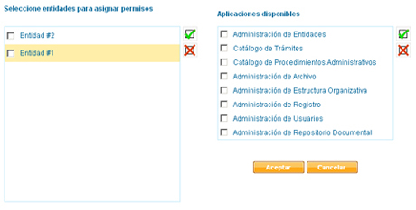 Mediante el componente de la izquierda, el usuario podrá seleccionar en qué entidades se le quieren dar permisos al nuevo usuario. 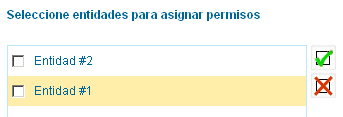 Mediante el componente de la derecha, se seleccionarán las aplicaciones en las que el usuario tendrá permisos de administración. 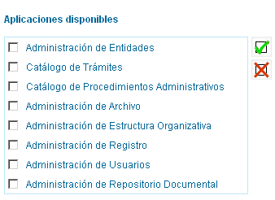 Mediante los botones y se podrá selccionar y deseleccionar todos los checks del componente correspondiente. Una vez seleccionados los permisos en las entidades correspondientes, puede guardarlos pulsando sobre el botón Aceptar.
Para poder modificar permisos, es necesario seleccionar del listado de entidades ya asignadas al usuario las entidades de las que se quieren modificar sus permisos (una o más).
3) 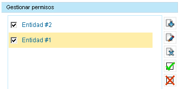 Desde la nueva ventana, el usuario podrá modificar los permisos asignados en las entidades marcadas del listado anterior. 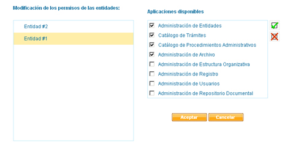 Mediante el componente de la izquierda, el usuario podrá comprobar las entidades seleccionadas del listado de entidades ya asignadas. 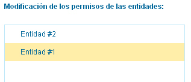 Pulsando sobre el nombre de la entidad, se visualizarán los permisos asignados para la entidad pulsada. 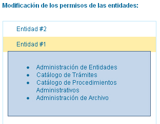 Mediante el componente de la derecha, el usuario podrá modificar los permisos en las aplicaciones asignadas. 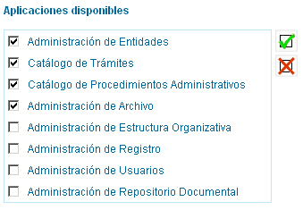 En el caso de modificar los permisos de dos o más entidades, y estas tener diferentes permisos en las aplicaciones, las aplicaciones no coincidentes aparecerán marcadas de otro color para avisar al usuario. 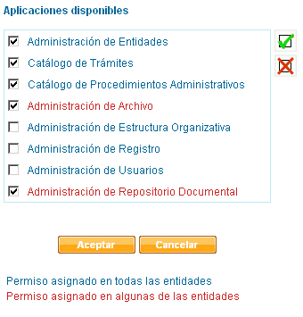 Pulse sobre el botón para Eliminar todos los permisos de una entidad:
Para poder eliminar todos los permisos de una entidad, es necesario seleccionar del listado de entidades ya asignadas al usuario las entidades de las que se quieren eliminar sus permisos (una o más).
4) Pulse sobre el botón para Seleccionar todas las entidas ya asignadas: Pulse sobre el botón de Eliminar permisos para eliminar los permisos de las entidades seleccionadas. En caso de no querer eliminar todos los permisos para una entidad, sino únicamente querer modificar los de algunas aplicaciones para esa entidad, se deberán seguir los pasos del punto 2 (Modificar permisos).
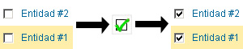
5) Pulse sobre el botón para Deseleccionar todas las entidas ya asignadas:
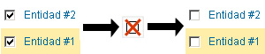
|
||||